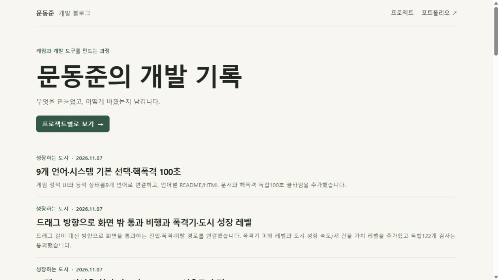
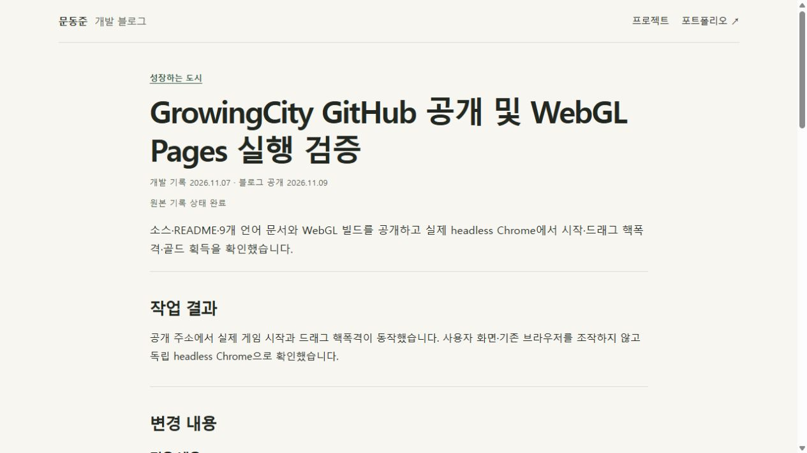
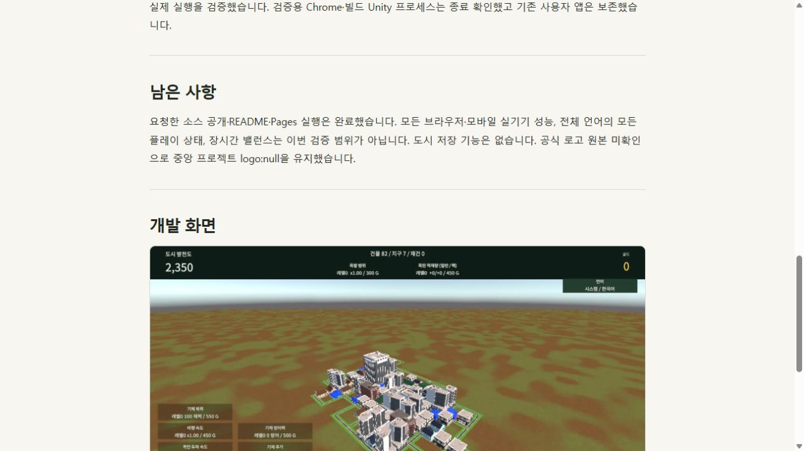

Tracefolio REPORTS & ISSUES
Tracefolio REPORTS & ISSUES문동준 개발 블로그 Cloudflare Pages 공개
검증 대기중앙 아카이브의 개발 기록 641편과 사진 4,656개를 별도 블로그에 공개했습니다.
작업 결과
문동준 개발 블로그를 공개했습니다. 글은 개발 기록 날짜순으로 정렬되며 공개일도 별도로 표시합니다.
변경 내용
적용 내용
공개된 개발 기록만 가져왔습니다. 네이버 블로그 관리자와 설정 운영 기록, 매뉴얼·토론은 제외했습니다. 날짜는 기록 시각을 한국시간으로 환산했습니다. 사진은 공개 출처 파일과 원본 해시를 유지했습니다. 구형 기록 중 일부는 원문 링크 중심으로 정리됩니다.
독립 Cloudflare Pages 프로젝트와 비공개 GitHub 소스 저장소를 만들었습니다. 애드센스 게시자 ID 옵션은 기본 비활성 상태입니다. 이전 개정본 10개는 대표 글에 연결했습니다.
검증
17개 프로젝트와 대표 글 17편의 HTTP 200, 사진 15개의 원본 SHA-256, 기존 포트폴리오 HTTP 200, 이전 글 주소 301, 미등록 경로 404를 확인했습니다. 로컬 HTML 688개와 사진 참조 6,579개의 내부 링크 오류는 0건입니다. 테스트용 게시자 ID로 광고 스크립트와 ads.txt 생성을 확인한 뒤 운영 빌드는 광고 비활성 상태로 다시 배포했습니다. 새 작업 폴더에서 이미지 4,656개 해시와 동일 빌드를 확인했습니다.



남은 사항
GitHub 커밋 후 Cloudflare 배포는 현재 Wrangler 직접 업로드로 진행합니다. 실제 애드센스 사이트 심사와 광고 활성화는 이후 단계입니다. 네이버 자동 예약과 원고 보충 설정은 꺼졌습니다. 서버에 예약된 글 두 건과 설치형 앱·확장·기존 폴더는 남아 있습니다. 자동 승인 검토는 설치형 앱 전체 제거가 네이버 기능과 작업 삭제 요청보다 넓을 수 있다고 판단해 공식 제거 명령을 차단했습니다. 새 폴더는 독립 복제본입니다. 이 신규 사이트에는 이전 운영 화면이 없습니다. 새 공식 로고 원본을 확인하지 못해 프로젝트 로고는 미등록입니다. 전역 지침 변경은 없습니다.
대화 기록 요약(개별 시각 미기록). 사용자가 “moondongjun-blog.pages.dev로 만들어줘”라고 요청하고 포트폴리오 분리, 공개 개발 내역과 사진 이전, 애드센스 준비, 네이버 기능 정리, 작업 폴더 변경을 지정했습니다. AI는 자동 작업 정지 후 공개 기록을 옮기고, 파일명이 다른 개정본을 실제 목록에서 확인해 대표 글에 묶었습니다.
작업 시간
- 제안 시간: 초기 확인 약 2분, 자료 선별 및 구현 10~20분 예상.
- 실제로 완료된 시간: 2026-11-09 15:15:52 KST 시작. 15:25:53 KST 최종 운영 HTTP 검증 완료. 약 10분.
- XERJ: 미사용 — 연결 도구 미제공. rg와 원문 대조, 설치형 API, 브라우저 및 HTTP 검사를 사용했습니다.